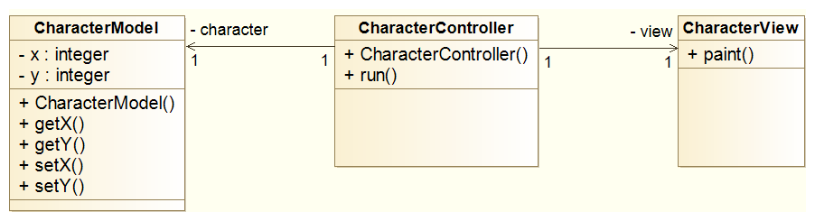
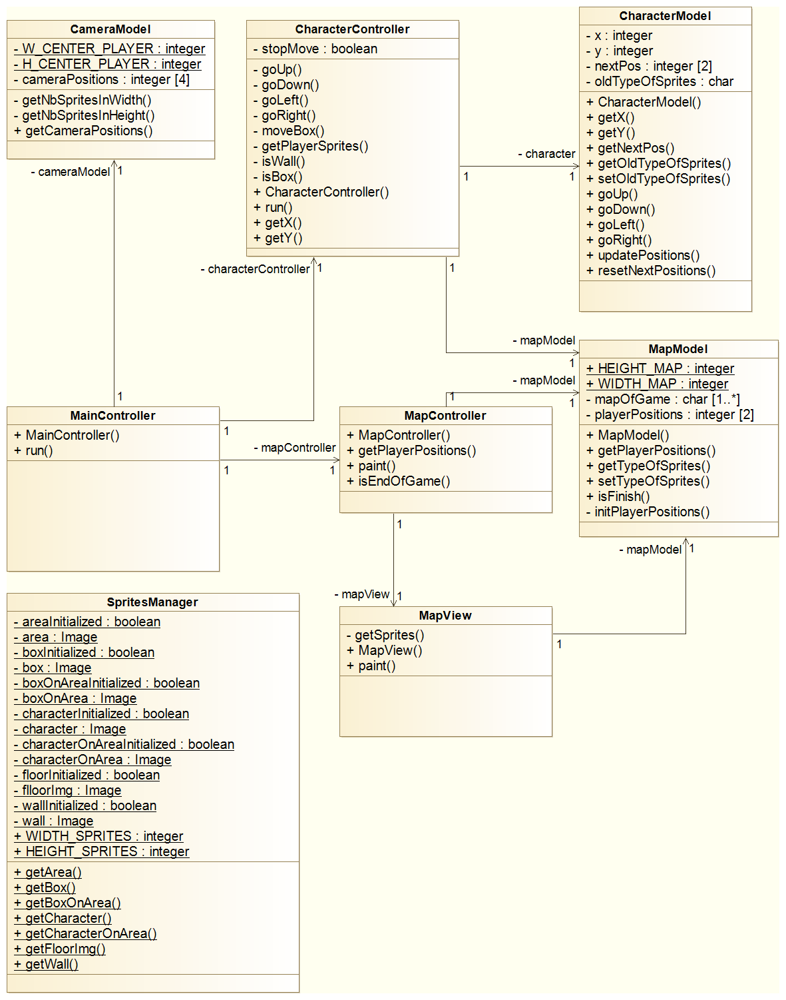

Les bases
Étape 1
Cette étape vous permettra d'appréhender les bases de la Progammation Orientée Objet et du modèle d'architecture Modèle Vue Contrôleur.
Sokoban contre POO ?
Non... POO n'est pas un ennemi !
Vous voici dans un workshop pour réaliser le jeu SOKOBAN en Programmation Orientée Objet c'est-à-dire POO. Dans ce workshop il paraît même que nous parlerons du modèle d'architecture Modèle Vue Contrôleur c'est-à-dire MVC. Le programme est ambitieux mais ne vous faites aucune crainte, nous avancerons pas à pas et je vais essayer d'être clair.
Voici pour la présentation du workshop.
Théorie
Nous allons, avant de passer à la pratique, nous écarter un peu du jeu SOKOBAN dans ce passage théorique. En effet, je vais vous présenter les concepts :
- de la Programmation Orientée Objet ;
- et du modèle d'architecture Modèle Vue Contrôleur.
Version procédurale
Imaginons un petit jeu où l'on doit déplacer un personnage (ceci ressemble un peu à SOKOBAN...). Mais il se déplacera sur une petite carte (20 colonnes et 10 lignes) ainsi pas besoins de gérer de caméra puisqu'il s'agit de la taille de l'écran.
Ce personnage doit :
- connaître sa position ;
- savoir se déplacer (vers le haut, à droite, vers le bas et à gauche) ;
- savoir ses limites (il ne peut pas aller en dehors de l'écran).
Le personnage sera représenté par un "x".
Voici le code de la version procédurale de ce petit programme (téléchargeable ici).
#include <Gamebuino-Meta.h>
// position du personnage
int xCharacter;
int yCharacter;
void setup() {
// initialiser la gambuino
gb.begin();
// initialisation de la position du personnage
xCharacter = 10;
yCharacter = 5;
}
void loop() {
// boucle d'attente
while(!gb.update());
// effacer l'écran
gb.display.clear();
manageMove();
paint();
}
// Gérer les déplacement
void manageMove() {
// Note :
// * Le test : (yCharacter > 0) permet de ne pas sortir du haut de l'écran.
// * Le test : (xCharacter < 19) permet de ne pas sortir de la droite de l'écran.
// * Le test : (yCharacter < 9) permet de ne pas sortir du bas de l'écran.
// * Le test : (xCharacter > 0) permet de ne pas sortir de la gauche de l'écran.
// Ainsi on définit les limites du personnage.
if(gb.buttons.pressed(BUTTON_UP)) {
if(yCharacter > 0) {
yCharacter--;
}
} else if(gb.buttons.pressed(BUTTON_RIGHT)) {
if(xCharacter < 19) {
xCharacter++;
}
} else if(gb.buttons.pressed(BUTTON_DOWN)) {
if(yCharacter < 9) {
yCharacter++;
}
} else if(gb.buttons.pressed(BUTTON_LEFT)) {
if(xCharacter > 0) {
xCharacter--;
}
}
}
// Gérer l'affichage
void paint() {
for(int y=0 ; y<=yCharacter ; y++) {
for(int x=0; x<20 || x<xCharacter ; x++) {
if(x == xCharacter && y == yCharacter) {
gb.display.print("x"); // afficher le personnage
} else {
gb.display.print(" "); // afficher une colonne vide
}
}
gb.display.println(); // passage à la ligne suivante
}
}
Version orientée objet en MVC
Le MVC est un modèle d'architecture, cela sert à décrire comment le code doit être découpé. Le MVC implique qu'il y ai 3 couches :
- le modèle : qui gère les données ;
- la vue : qui gère l'affichage ;
- et le contrôleur : qui fait l'interface entre la vue et le modèle.
Dans votre programme principal vous devez avoir uniquement des interactions avec le/les contrôleur(s).
De plus, imaginez que vous souhaitez faire un portage de votre programme vers un autre terminal (sur ordinateur, par exemple) et bien dans ce cas vous n'avez que la couche vue à modifier, voilà un intérêt du MVC.
Encore un avantage du MVC, la résolution de bugs :
- si vous rencontrez un bug de comportement de vos données alors inspectez la couche modèle.
- si vous rencontrez un bug d'affichage alors inspectez la couche vue.
- si vous rencontrez un bug d'interactions alors inspectez la couche contrôleur.
Pour un petit programme le découpage peut-être lourd mais voyez les avantages que cela apporte.
Un concept important dans la POO est la classe. Une classe est une structure de donnée qui a :
- des attributs : les variables de la classe ;
- des méthodes : les fonctions de la classe.
Faisons un point sur les classes.
Voici un exemple de classe C++ :
// 1) Déclaration
class Plan {
private:
int nbPieces;
public:
Plan(int unNbPieces);
void dessiner();
};
// 2) Définition
Plan::Plan(int unNbPieces) : nbPieces(unNbPieces) {
}
void Plan::dessiner() {
for(int i=1 ; i<=nbPieces ; i++) {
// dessiner la pièce...
}
}
// 3) Instanciation et utilisation
// Création d'un objet de type *Plan*
Plan *maMaison = new Plan(2);
// Utilisation de l'objet
maMaison->dessiner();
On remarque plusieurs parties dans le code ci-dessus.
- La déclaration
Elle définit notre classes : ses attribut et le prototype de ses méthodes. Le mot "class" est important c'est lui qui dit au compilateur que ce que l'on écrit est une classe.
Ici nous avons un attribut : nbPieces c'est un entier qui contient le nombre de pièces du plan (c'est pas une surprise, enfin j'espère !).
Ensuite, nous avons deux méthodes :
- Plan qui est une méthode particulière puisqu'il s'agit d'un constructeur (on en reparle un peu plus loin).
- dessiner qui nous permettra de dessiner le plan.
Remarque : Faites attention au point-virgule à la fin des classes, sans ce point-virgule l'IDE Arduino donnera l'erreur new types may not be defined in a return type à la compilation.
De plus, une chose très importante : les attributs doivent être privés. Il s'agit de l'encapsulation, un concept de la POO, qui veut que l'on interdit l'accès aux attributs de classes depuis l'extérieur. Les méthodes sont en revanche publiques ce qui permet de les utiliser dans le programme principal par exemple.
Enfin, la déclaration se place dans un fichier .h (pour header, Plan.h).
Le constructeur
Plusieurs choses doivent être dites à son sujet :
- Le/les constructeur(s), il peut en effet y en avoir plusieurs, ils doivent avoir le même nom que la classe (sans quoi ça ne serait qu'une méthode).
- On s'en sert pour initialiser les attributs de notre classe.
- La définition
La définition du constructeur est particulière, en effet dans beaucoup de langage (ce qui reste possible en C++) il aurait fallu écrire ceci :
Plan::Plan(int unNbPieces) {
nbPieces = unNbPieces;
}
Le C++ a un petit sucre syntaxique qui permet de faire la même chose de la manière suivante :
Plan::Plan(int unNbPieces) : nbPieces(unNbPieces) {
}
Remarque : toutes méthodes, dont le constructeur, doivent être préfixées par le nom de la classe, ici : Plan::.
La méthode dessiner est composée d'une boucle qui itère sur le nombre de pièces et le reste du code je le laisse pour votre imagination.
La définition se place dans un fichier .cpp (Plan.cpp pour notre exemple).
- Instanciation et utilisation
Lorsque qu'on crée un objet à partir d'une classe on dit qu'on instancie un objet. Cet objet est une instance, autrement dit, c'est une maison alors que la classe est un plan. On crée ici un pointeur de Plan, en effet le type est "Plan *". Ainsi pour instancier l'objet il faut faire appel au mot-clé C++ "new". Le "2" passé au constructeur c'est le nombre de pièces de notre maison.
Enfin pour appeler une méthode (sur un pointeur) il faut utiliser le symbole suivant : "->" (ici : maMaison->dessiner()).
- Bonus
Une représentation UML via un diagramme de classes est possible est le voici :

Remarques :
- Le moins avant l'attribut signifie qu'il est privé.
- Le plus avant les méthodes signifie qu'elles sont publiques.
- La modélisation n'est pas complète, il manque effectivement le paramètre du constructeur.
Revenons à notre jeu.
Maintenant que vous savez créer des classes voyons de quoi nous avons besoins pour que notre petit programme respecte le MVC. Il faut :
- CharacterModel : le modèle c'est-à-dire le personnage.
- CharacterView : la vue qui gère l'affichage du personnage.
- CharacterController : le contrôleur qui permet d'interagir avec le personnage.
Comme vous le voyez par convention :
- Le modèle est suffixé par Model.
- La vue est suffixée par View.
- Le contrôleur est suffixé par Controller.
Comme vous savez créer des classes, avant de passer à la réalisation du SOKOBAN, vous pouvez essayer de réaliser une version orientée objet qui respecte le MVC de notre exemple, ne réinventez pas tout vous pouvez en effet vous inspirer de la version procédurale.
Pour vous guider voici un diagramme de classes (fait en UML) qui représente notre petit programme avec toutes les classes et méthodes nécessaires :

Si vous n'y arrivez pas, n'ayez crainte vous pouvez télécharger la version orientée objet que j'ai fait.
Remarques :
- La vue n'a pas de constructeur du moins nous n'en n'avons pas déclaré. Nous utilisons le constructeur par défaut.
- Il s'agit ici d'un petit exemple avec peu de classes, imaginez que vous ayez un Rubik's cube à développer : l'intérêt du MVC est alors non négligeable.
Enfin des améliorations sont possibles, effectivement il devrait être interdit d'instancier plusieurs personnages (imaginez le désordre que ça engendrerait !). Ne lisez la suite que si vous voulez avoir mal de tête ;). Pour faire cela nous pourrions utiliser le design pattern Singleton, mais ce n'est pas l'objectif de ce cours.
PRATIQUE
La pratique vous permettra de créer l'ensemble des classes et méthodes utiles au jeu SOKOBAN. Pour les méthodes nous ferrons juste la description, en effet, nous verrons la définition (le contenu) de chacune d'elle au fur et à mesure des étapes qui composent ce workshop.
Si vous ne vous sentez pas encore prêt à franchir le cap de la POO, il existe une version procédurale du jeu SOKOBAN (cf. partie 1 par jicehel).
Je vous invite à télécharger le code source qui vous servira de base au programme, vous le trouverez ici.
Voici le diagramme de classes du code que vous devez écrire : 
Remarques :
- Les membres (attributs et méthodes), qui sont soulignés, représentent des membres de classe, autrement dit statique (on en reparle plus loin).
- Je donne par la suite la description (type de retour et paramètres) des méthodes (je ne l'ai pas mis sur le diagramme afin de ne pas le surcharger).
- Comme le montre le diagramme ci-dessus, vous pouvez adapter le MVC, par exemple pour une classe vous n'avez pas l'obligation d'écrire les 3 couches (c'est pourquoi il n'y a que le modèle de caméra).
Membre statique (ou membre de classe)
On définit par membre statique un membre appartenant à la classe. Par exemple, un attribut statique aura la même valeur pour chacune des instances de la classes. Si pour une classe donnée vous avez du code commun à toutes les instances vous pouvez alors l'écrire dans une méthode statique.
Définition des méthodes
Remarques :
- Si le type de retour n'est pas précisé c'est que la méthode ne retourne rien.
- S'il on ne précise aucun attribut c'est que la méthode n'en a pas.
- Pour les paramètres je fournis les noms.
- CameraModel
- getNbSpritesInWidth : retourne un entier qu'on ne doit pas modifier.
- getNbSpritesInHeight : retourne un entier qu'on ne doit pas modifier.
- getCameraPositions : retourne un tableau d'entier, et prend deux entiers qu'on ne doit pas modifier (aX et aY).
- CharacterController
- moveBox : retourne un caractère qu'on ne doit pas modifier, et prend un caractère qu'on ne doit pas modifier (aReplacedSprites), ainsi que 4 entiers qu'on ne doit pas modifier (aX1, aY1, aX2 et aY2).
- getPlayerSprites : retourne un caractère, et prend un caractère qu'on ne doit pas modifier (aReplacedSprites), de plus cette méthode ne doit pas modifier l'objet.
- isWall : retourne un booléen qu'on ne doit pas modifier, et prend un caractère qu'on ne doit pas modifier (aReplacedSprites), de plus cette méthode ne doit pas modifier l'objet.
- isBox : retourne un booléen qu'on ne doit pas modifier, et prend un caractère qu'on ne doit pas modifier (aReplacedSprites), de plus cette méthode ne doit pas modifier l'objet.
- CharacterController : prend deux paramètres un CharacterModel et un MapModel.
- getX : retourne un entier qu'on ne doit pas modifier, et cette méthode ne doit pas modifier l'objet.
- getY : retourne un entier qu'on ne doit pas modifier, et cette méthode ne doit pas modifier l'objet.
- CharacterModel
- CharacterModel : prend un tableau d'entier qu'on ne doit pas modifier (initPlayerPos).
- getX : retourne un entier qu'on ne doit pas modifier, et cette méthode ne doit pas modifier l'objet.
- getY : retourne un entier qu'on ne doit pas modifier, et cette méthode ne doit pas modifier l'objet.
- getNextPos : retourne un tableau d'entier qu'on ne doit pas modifier, et cette méthode ne doit pas modifier l'objet.
- getOldTypeOfSprites : retourne un caractère qu'on ne doit pas modifier, et cette méthode ne doit pas modifier l'objet.
- setOldTypeOfSprites : prend un caractère qu'on ne doit pas modifier.
- MainController
- MainController : prend un pointeur de MapController, un pointeur de CameraModel et un pointeur de CharacterController en paramètre (respectivement aMapController, aCameraModel et aCharacterController).
- MapController
- MapController : prend un pointeur de MapModel et un pointeur de MapView en paramètre (respectivement aMapModel et aMapView).
- getPlayerPositions : retourne un tableau d'entier qu'on ne doit pas modifier, et cette méthode ne doit pas modifier l'objet.
- paint : prend un tableau d'entier qu'on ne doit pas modifier, et cette méthode ne doit pas modifier l'objet.
- isEndOfGame : retourne un booléen, et cette méthode ne doit pas modifier l'objet.
- MapModel
- getPlayerPositions : retourne un tableau d'entier qu'on ne doit pas modifier, et cette méthode ne doit pas modifier l'objet.
- getTypeOfSprites : retourne un caractère qu'on ne doit pas modifier, et prend 2 entiers qu'on ne doit pas modifier (aXSprites et aYSprites).
- setTypeOfSprites : prend 2 entiers qu'on ne doit pas modifier (aXSprites et aYSprites), et un caractère qu'on ne doit pas modifier (aTypeOfSprites).
- isFinish : retourne un booléen, et cette méthode ne doit pas modifier l'objet.
- MapView
- getSprites : retourne une référence d'Image, prend un caractère qu'on ne doit pas modifier (typeOfSprites), de plus cette méthode ne doit pas modifier l'objet.
- MapView : prend un pointeur de MapModel en paramètre (aMapModel).
- paint : prend un tableau d'entier, et cette méthode ne doit pas modifier l'objet.
- SpritesManager
- getArea : retourne une référence d'Image.
- getBox : retourne une référence d'Image.
- getBoxOnArea : retourne une référence d'Image.
- getCharacter : retourne une référence d'Image.
- getCharacterOnArea : retourne une référence d'Image.
- getFloorImg : retourne une référence d'Image.
- getWall : retourne une référence d'Image.
Astuces
- Méthode ne devant pas modifier l'objet
On telle méthode s'écrit suivi par le mot-clé "const", comme dans l'exemple suivant :
class Voiture {
public:
void reviser() const;
};
void Voiture::reviser() const {
}
Effectivement, il paraît absurde de modifier la voiture lorsqu'on la révise, en effet on n'a pas à modifier l'état de la voiture.
- Pointeur
Voici un exemple d'une fonction qui prend en paramètre un pointeur de notre classe Voiture :
void detruire(Voiture * unPointeur) {
}
On dit que notre type est un pointeur grâce au mot-clé "*". Ainsi unPointeur est un pointeur de Voiture.
- Référence
Voici un exemple de fonction qui retourne une référence de Voiture :
Voiture& construire() {
}
Le "&" signifie qu'on a une référence.
- Membres statiques
Voici un exemple d'attribut statique et de méthode statique :
class Voiture {
private:
static int nbInstances;
public:
static int getNbInstances();
};
int Voiture::getNbInstances() {
return Voiture::nbInstances;
}
Plusieurs remarques :
- Le mot-clé "static" permet de définir un membre statique (attribut ou méthode).
- Lors de la définition d'une méthode de classe on ne reprécise pas qu'il s'agit d'un membre statique, vous l'avez en effet remarqué le mot-clé "static" n'est pas écrit (et ce n'est pas une faute).
- Pour accéder à un attribut statique de MaClasse, il faut le préfixer par "MaClasse::".
Vous avez désormais toutes les cartes en main pour écrire les bases du Sokoban en orienté objet.
Si vous avez terminé ou si vous rencontrez des problèmes vous pouvez télécharger la solution ici.
Dans la prochaine étape, c'est-à-dire la deuxième, nous réaliserons la gestion de la caméra.
N'hésitez pas à me faire un retour : les améliorations que vous apporteriez (un regard extérieur est toujours bienvenu), les fautes, etc.